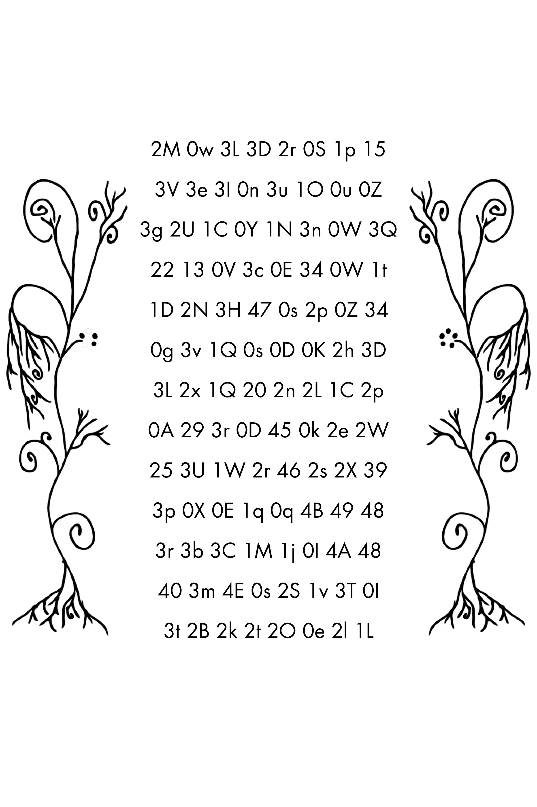
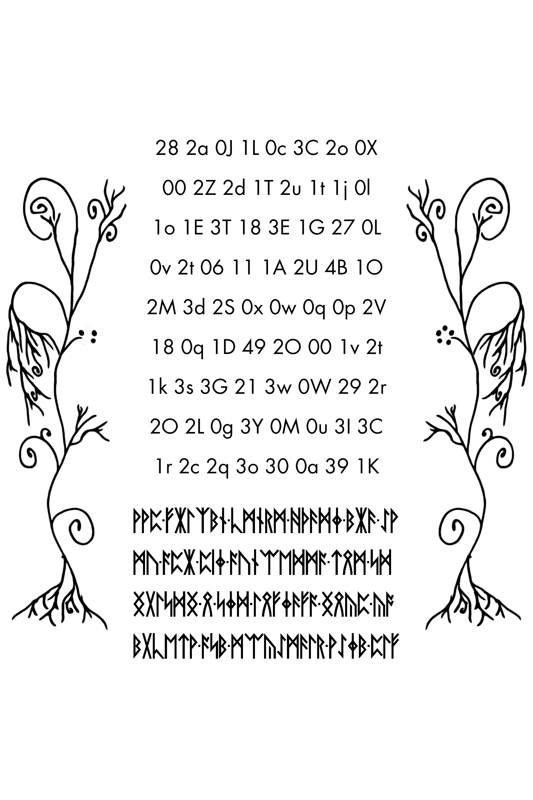

Alphanumeric grids on LP2-49–51
Three plant-bordered sheets, 256 two-character entries, and a reproducible count that preserves case and leading zeroes.
On this page
LP2-49–51 contain rectangular arrays of two-character entries made from decimal digits and Latin letters. They are easy to recognize by the tall, curling plant borders on both sides. These arrays are different from the numerical magic squares: an arrangement in rows and columns does not by itself establish an arithmetic rule.
Where the grids appear



The first sheet has three runic rows above its grid, ending in a small red dotted cluster. The middle sheet has no runic rows. The third has four runic rows below the grid. The borders share curling stems, drooping leaves, root-like branches, and groups of filled dots. Compare the originals before treating the ornaments as identical copies.
What can be counted directly
| Page | Grid rows | Entries per row | Entries | Runes outside the grid |
|---|---|---|---|---|
| LP2-49 | 10 | 8 | 80 | 66 |
| LP2-50 | 13 | 8 | 104 | 0 |
| LP2-51 | 9 | 8 | 72 | 92 |
Together, the archived grids contain (10 + 13 + 9) × 8 = 256 entries. Each entry contains two characters. The count 256 is therefore a count of entries, not runes, bytes, or distinct values. Calling these bytes would require an explicit decoding rule and a check of its outputs.
Repeated entries and distinct tokens
Counting exact two-character strings across all three archived grids gives 161 distinct tokens among the 256 entries. Of these, 92 occur once and 69 occur more than once. “Distinct tokens” counts different spellings; “entries” counts positions, including repetitions.
| Most frequent token | Occurrences |
|---|---|
0s | 4 |
1D | 4 |
1K | 4 |
2O | 4 |
2r | 4 |
3C | 4 |
No token occurs more than four times in this transcription. For a concrete comparison, 0s occurs at LP2-49 row 5, column 5, and at LP2-50 row 5, column 5; row 6, column 4; and row 12, column 4. Grid row numbers exclude the runic text above or below the arrays.
Case must remain part of the comparison: 0X and 0x each occur three times, but they are separate tokens here. Repetition alone does not establish whether an entry represents a letter, a coordinate, a number, or something else. This inventory describes the archived data before choosing such an interpretation.
Reproduce the inventory
The JSON export includes an inventory with frequencies and sequence positions for every distinct token. Regenerating it with the export script recomputes those counts from the page records. This independent short calculation checks the headline counts from the exported entries:
import json
from collections import Counter
from pathlib import Path
data = json.loads(
Path("exports/alphanumeric-grids.json").read_text(encoding="utf-8")
)
counts = Counter(row["token"] for row in data["records"])
print("entries", sum(counts.values()))
print("distinct", len(counts))
print("singletons", sum(n == 1 for n in counts.values()))
print("repeated tokens", sum(n > 1 for n in counts.values()))
print("maximum frequency", max(counts.values()))Expected output: entries 256, distinct 161, singletons 92, repeated tokens 69, and maximum frequency 4. Sequence positions in the inventory point back to the coordinate-bearing records; they are not an additional decoding step.
Preserve the spelling of each entry
The first grid row on LP2-49 is 3N 3p 2l 36 1b 3v 26 33. Uppercase and lowercase letters both matter to the record: 0X and 0x, for example, appear as separate entries in its third row. Keep leading zeroes, too. Converting the entries to ordinary integers or uppercasing them would change the data before a hypothesis has been tested.
Some glyphs are easy to confuse, especially zero and uppercase O, or lowercase l and uppercase I. The stored transcription is a source you can reproduce, not a substitute for checking an ambiguous glyph against the original image. A proposed correction should identify its page, row, column, and image evidence. See the transcription guide for the distinction between an image and its text representation.
What an encoding proposal needs to specify
Reading these entries as positional numbers is a testable proposal. It needs an ordered alphabet, a base, an explanation of letter case, and a reading order across rows and pages. Names such as “base 60” or “base 62” alone do not provide that specification. Different symbol orders assign different values to the same entry.
For an alphabet of length b, a two-character entry xy would have value b × index(x) + index(y), using zero-based indices. That equation describes the proposed conversion; it does not show that the manuscript intended it. Keep the surrounding runes and artwork available as context, and distinguish a valid conversion from a demonstrated decipherment.
Reproduce the grid dimensions
Run this Python snippet from the repository root. It reads the archived page records, selects rows consisting entirely of hyphen-separated two-character alphanumeric entries, and checks that every selected row has eight entries. It does not choose a numeral base or change character case.
import json
import re
from pathlib import Path
total = 0
for number in (49, 50, 51):
page_id = f"lp2-{number}"
page = json.loads(
Path(f"data/pages/{page_id}.json").read_text(encoding="utf-8")
)
rows = [
line.removesuffix("/").split("-")
for line in page["raw"].splitlines()
if re.fullmatch(r"[0-9A-Za-z]{2}(?:-[0-9A-Za-z]{2})+/?", line)
]
assert rows and all(len(row) == 8 for row in rows)
count = sum(map(len, rows))
total += count
print(page_id, len(rows), 8, count)
print("total", total)Expected output:
lp2-49 10 8 80
lp2-50 13 8 104
lp2-51 9 8 72
total 256This check reproduces the dimensions of the stored transcription. It does not independently verify every glyph or prove that a particular traversal is intended. If you alter the transcription format, revisit the row-selection expression rather than assuming an unchanged count means an unchanged grid.
Download entries with coordinates
Use the structured JSON export for scripts or the CSV export for a table. Each entry keeps its page, grid row, column, sequence position, and original two-character token. Rows and columns start at one; the surrounding runic rows are not included in the grid row numbers.
The sequence follows pages 49, 50, and 51, reading each grid left to right and top to bottom. This is a reproducible export order, not a demonstrated cipher traversal. The JSON also records source-file and transcription checksums. Neither export normalizes case or removes leading zeroes.
When importing the CSV into a spreadsheet, set the token column to Text. Automatic number conversion can turn 04 into 4. Use the JSON when you need strings preserved without spreadsheet import settings.
Regenerate either format using the export script:
python scripts/export_alphanumeric_grids.py --format json
python scripts/export_alphanumeric_grids.py --format csvBoth commands print to standard output. The script rejects malformed rows or changed page dimensions rather than silently publishing an incomplete grid. It checks the archived structure; visual verification of ambiguous glyphs remains a separate task.
Originals and data
The page records for LP2-49, LP2-50, and LP2-51 link the original JPEGs, pinned archive sources, and checksums. Their machine-readable records are 49 JSON, 50 JSON, and 51 JSON. Return to the illustrated index to compare other manuscript details.